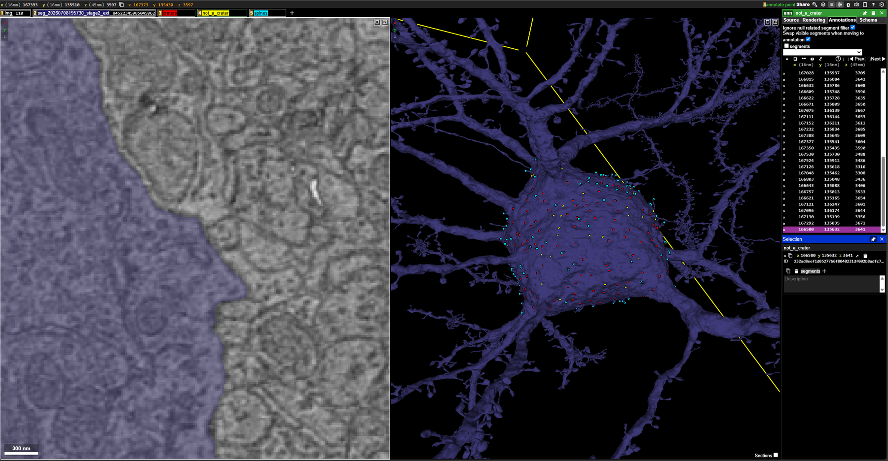
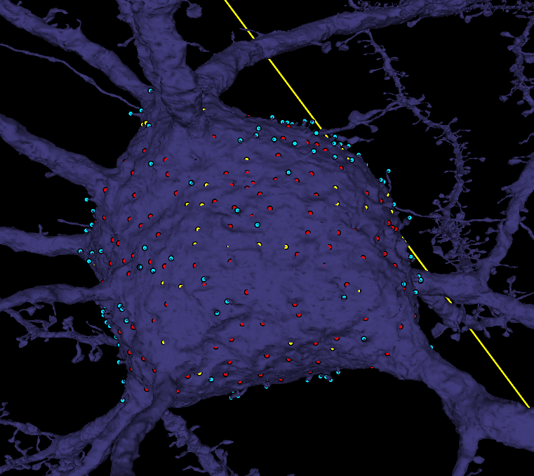

MEC Soma Crater & Spine Annotation Protocol v1.0
Point-annotating synapse-associated craters and somatic spines on the somas of 15 MEC cells in Neuroglancer (Spelunker), to build a manually reviewed reference for automated detection.
General task
Annotate soma-surface craters and spines in 15 cells: five pyramidal, five stellate, and five inhibitory. Each cell has its own row in the annotation spreadsheet with a starting Neuroglancer link and columns for claiming, saving progress, and marking completion.
These annotations become a manually reviewed reference for developing and evaluating automated detection of perisomatic synapse-associated craters and somatic spines. They will be used to find missed structures, assess false detections, and improve how the code separates neighboring craters.
local://annotations layers that live only in the Neuroglancer state. Nothing is stored until you press Share and paste the resulting link into the spreadsheet. Save a link to ng_link_temp whenever you pause, and again before closing the tab.
Annotation layers
Every starting link comes with the image, the segmentation showing the single assigned cell, and three empty point-annotation layers. Use them as-is; do not rename them or add layers, because the evaluation matches points by layer name.
| Layer | Color | What goes in it |
|---|---|---|
| craters | red | One point per confirmed synapse-associated crater, near the center of the depression on the soma surface. |
| not_a_crater | yellow | Optional: indentations you checked and ruled out (e.g. a passing myelinated axon), so you don't revisit them. |
| spines | cyan | Points directly on somatic spine protrusions. Several points on one extended or complex spine are fine. |
To place a point: select the layer in the top layer bar, then Ctrl+click on the location in a 2D panel or on the mesh in the 3D panel. Points placed on the mesh land on the surface, which is where crater centers and spines should sit.

Step-by-step
- Claim and open the cell. Pick an unclaimed row in the spreadsheet, put your name in the
usercolumn, and open the link inng_link_start. Inspect the soma systematically: rotate the 3D mesh to examine every side, including surfaces hidden in the starting view. Focus on the soma and the broad transitions into major processes, including the apical neck. Exclude thin branches extending away from the soma. - Find candidate craters and verify them in 2D. When you find a depression in the mesh, navigate to that location in the image volume. Examine adjacent sections and, where helpful, another viewing plane to decide whether the depression corresponds to a synaptic contact. A surface indentation alone is not enough for a positive label.
- Mark confirmed craters. In the
craterslayer, place the point near the center of the depression on the soma surface so it can be matched spatially to a detected region. Aim for one representative point per distinct crater. If several clearly distinguishable craters lie close together, mark each one separately. - Rule out other indentations. Passing structures, such as myelinated axons, can deform the soma without forming the synaptic contact being sought. Do not label these as craters. When useful, drop a yellow point in
not_a_craterto record that the spot has been checked. Keep uncertain sites out of both confirmed layers and note them for review (see Uncertain sites). - Mark somatic spines. In the
spineslayer, place points directly on recognizable spine protrusions arising from the soma or the included neck region. Spatial coverage matters more than an exact one-point-per-spine count: multiple points on an extended or complex spine are acceptable, since the evaluation checks whether a detected structure overlaps one or more annotations rather than requiring one-to-one correspondence. Do not label ordinary mesh roughness or departing branches as spines. - Review and record completion. Make a final pass around the soma for missed surfaces and mislabeled structures. Press Share in Neuroglancer, copy the Spelunker link, paste it into
ng_link_final, and set thestatuscolumn to DONE. If you stop before the review is complete, paste the latest link intong_link_tempinstead and leavestatusblank.
Quick decision rules
| You see | Do this |
|---|---|
| Depression in the mesh + synaptic contact confirmed in 2D | Red point in craters, centered on the depression. |
| Two or more distinguishable craters side by side | One red point per crater. |
| Depression caused by a passing axon or other structure, no synapse | No crater point. Optionally a yellow point in not_a_crater. |
| Depression you can't resolve either way | No point in either crater layer. Note the location for review. |
| Protrusion from the soma or included neck region | Cyan point(s) in spines, on the protrusion itself. |
| Mesh roughness or a branch leaving the soma | Nothing. |
| Thin branch away from the soma | Out of scope, nothing. |
Uncertain sites
Sites you cannot confidently call either way must not go into craters or not_a_crater. Record them for review instead: note the cell's segment ID and the coordinates from the Neuroglancer position box, and pass them along with your DONE update so they can be looked at together.
Working example
The first annotated cell in the spreadsheet (the first stellate row, marked DONE) illustrates the intended labeling approach. Open its ng_link_final to see how densely craters and spines were marked and where the not_a_crater points were used. It is a working example, not an exhaustive reference: it likely captures many prominent crater-forming contacts but should not be treated as the ground truth for what counts.

Purpose
Automated detection of perisomatic synapse-associated craters and somatic spines is under development for the MEC volume. A manually reviewed set of 15 somas, balanced across pyramidal, stellate, and inhibitory cells, gives the developers a reference to identify missed structures, assess false detections, and tune how neighboring craters are separated.
Scope
- In: the soma surface and broad transitions into major processes, including the apical neck.
- Out: thin branches extending away from the soma; spines on dendrites proper; anything not on the assigned cell.
Data
- Volume: MEC alignment 2025-09 image (16 × 16 × 45 nm voxels) with the July 2026 stage-2 extended segmentation.
- Viewer: Spelunker (the lab's Neuroglancer), with the assigned cell pre-selected in the segmentation layer.
- Spreadsheet columns:
segid,cell type,ng_link_start,ng_link_temp,ng_link_final,user,status.
How the annotations are evaluated
- Crater points are matched spatially to detected regions, which is why each point should sit near the center of its depression.
- Spine points are checked for overlap: a detected structure counts if it overlaps one or more annotated points. Coverage beats exact counts.
- Yellow
not_a_craterpoints are for the annotator's own bookkeeping and as negative examples; they are not required.
Related documents
- Annotation spreadsheet — assignments, starting links, and completion tracking
- SOP-007: MEC Synapse Annotation Protocol — the synapse-level annotation task in the same volumes
- Task History · MEC & Hippocampus era
- Glossary — synapse, spine, soma definitions
Revision history
- v1.0 (2026-09-25) — initial SOP, written from the task instructions and the layer setup in the starting Neuroglancer links.